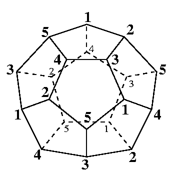

A manifold which is not homeomorphic to a sphere but
has the same homology group as a sphere.
This is derived by suitable identifications of facets
of a regular dodecahedron.
(Identify the vertices with the same label in the figure below.)

The data given here is a triangulation made by
Björner and Lutz.
This is the smallest triangulation currently known.
(16 vertices and 90 facets)
Some property
This is Cohen-Macaulay, but not constructible nor shellable.
A.Bjorner and F.H.Lutz,
Simplicial manifolds, bistellar flips and a 16-vertex
triangulation of the Poincaré homology 3-sphere",
to appear in Experimental Mathematics.
F.H.Lutz,
Triangulated manifolds with few vertices and vertex-transitive group actions,
Shaker Verlag (1999).